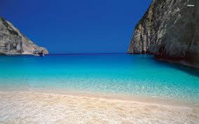

Page 1
Page 2
Page 4

food and places
Day 2,3,4
The average Greek eats roughly 12 kilograms (26 pounds) of feta cheese every single year.
There is amazing food that greece eats during the times throuists happens.